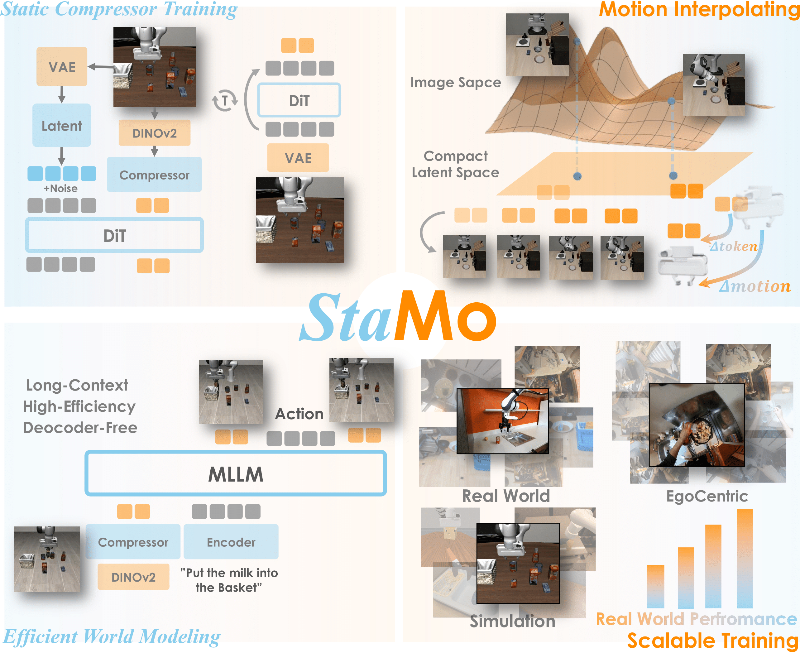

|
Zeju Li Email: zeju (dot) li (dot) cs [at] gmail (dot) com
I'm an undergraduate student at Zhejiang University, pursuing a bachelor's degree in Computer Science and Technology (expected to graduate in Jun 2027).
I am currently a research intern at MLL-Lab, Northwestern University, where I am fortunate enough to be advised by Prof. Manling Li and Prof. Ruohan Zhang. Previously, I had the privilege of working as a research assistant at the State Key Lab of CAD&CG, Zhejiang University, under the guidance of Prof. Hao Chen and Prof. Chunhua Shen. |
{kind=link}
NewsSep 5, 2026 STAIR is accepted to CORL-2026! 🎉 Mar 31, 2026 AGILE is accepted to SIGGRAPH-2026! Feb 21, 2026 StaMo is accepted to CVPR-2026 as an Highlight Presentation! Nov 08, 2025 ODYSSEY is accepted to AAAI-2026 as an Oral Presentation! |
Research

|
Perfect Demo Makes Poor Teacher: Learning Robust Alignment from Critical Motion Segments
Mingyu Liu*, Zeju Li*, Jiuhe Shu, Hanqing Wang, Yuhao Chao, Hao Chen†, Chunhua Shen† [project page] [arXiv] CORL, 2026 Robust robot learning needs corrective alignment dynamics, not just fluent expert trajectories. |
|
 |
StaMo: Unsupervised Learning of Generalizable Robot Motion from Compact State Representation
Mingyu Liu*, Jiuhe Shu*, Hui Chen, Zeju Li, Canyu Zhao, Jiange Yang, Shenyuan Gao, Hao Chen†, Chunhua Shen† [project page] [arXiv] CVPR, 2026 [Highlight Presentation, Top 3.1%] Compact state representations for efficient world modeling and action learning. |

|
ODYSSEY: Open-World Quadrupeds Exploration and Manipulation for Long-Horizon Tasks
Kaijun Wang*, Liqin Lu*, Mingyu Liu, Jianuo Jiang, Zeju Li, Bolin Zhang, Wancai Zheng, Xinyi Yu†, Hao Chen†, Chunhua Shen† [project page] [arXiv] AAAI, 2026 [Oral Presentation, Top 3.5%] Language-guided long-horizon mobile manipulation with a benchmark. |

|
AGILE: Hand-Object Interaction Reconstruction from Video via Agentic Generation
Jin-Chuan Shi*, Binhong Ye*, Tao Liu, Junzhe He, Yangjinhui Xu, Xiaoyang Liu, Zeju Li, Hao Chen†, Chunhua Shen† [project page] [arXiv] SIGGRAPH, 2026 [Conference Track] Reconstruct simulation-ready hand-object interaction from monocular video via agentic generation and robust pose tracking. |
|
This page borrows designs from Jon Barron's website. |